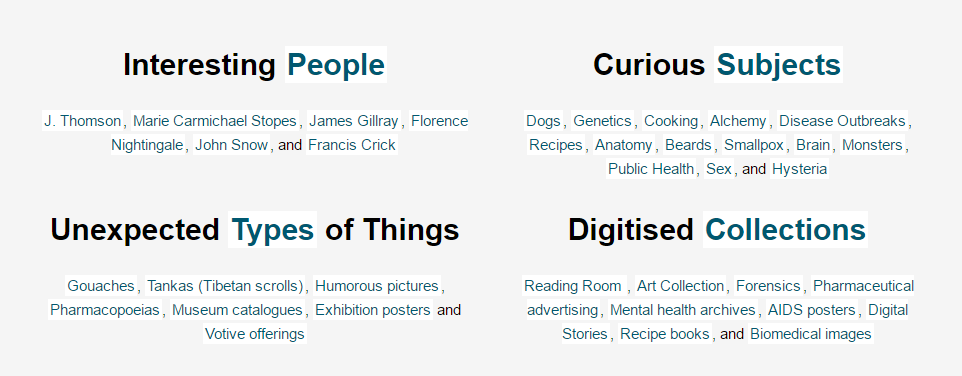
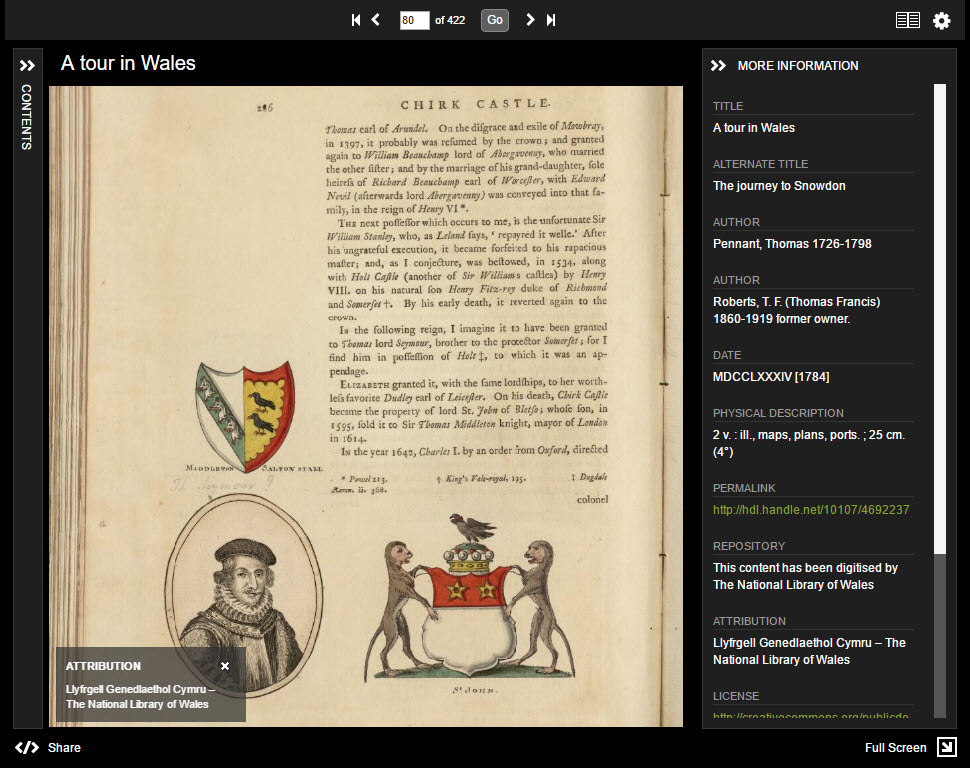
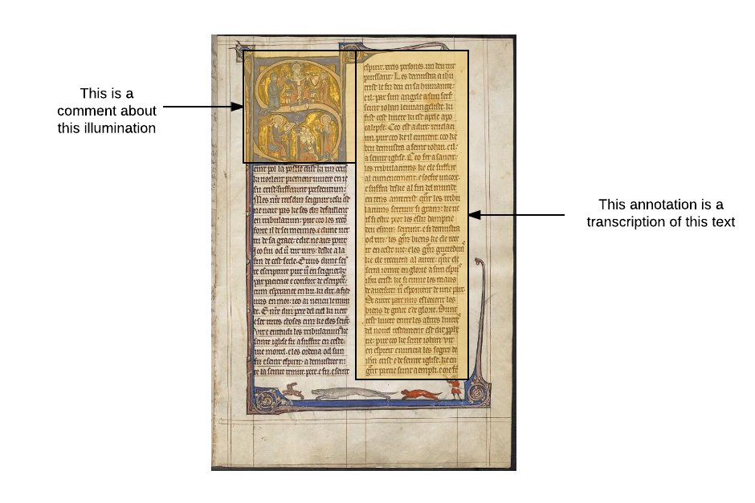
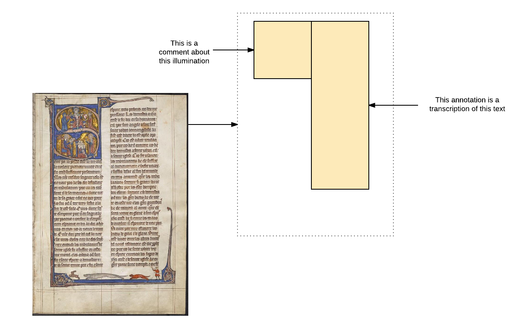
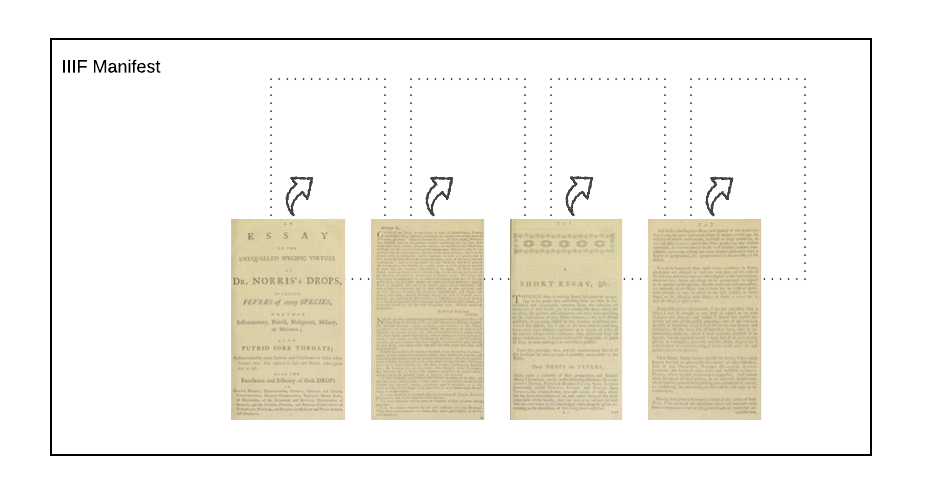
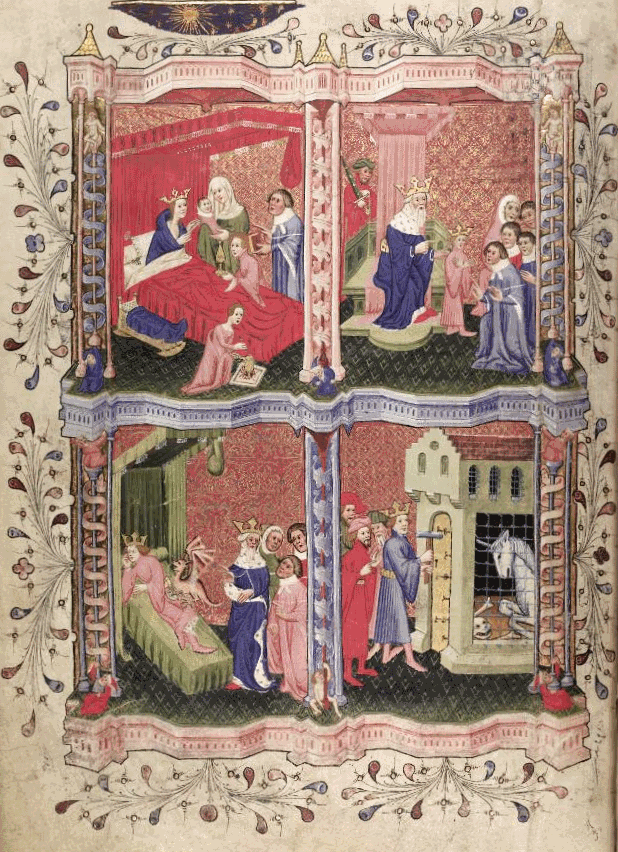

An Introduction to IIIF
Abstract
The International Image Interoperability Framework (IIIF, pronounced “triple-eye-eff”) is a set of application programming interfaces (APIs) based on open web standards and defined in specifications derived from shared real world use cases. It is also a community that implements those specifications in software, both server and client. This article provides a non-technical overview of the standards, and the benefits they bring to the sharing of content.
Descriptive semantics
A library or museum catalogue uses a metadata schema to capture information such as creator or subject. But it is not a requirement for enjoying a library, gallery or museum that we consult the catalogue first. We can go and look at things, and the curators of the content can arrange the things so as to encourage us to look at them.
The records in the catalogue describe the things in the collection. Browsing or searching the records can be easier than hunting through books on the shelves. We can find the descriptions of books by a particular author, or descriptions of paintings of seascapes. The records comprise the descriptive metadata available for each object. The descriptive metadata records are small and easy to share. First on cards, then microfiche, then electronic records.

By Dr. Marcus Gossler (Own work) [GFDL (http://www.gnu.org/copyleft/fdl.html) or CC-BY-SA-3.0 (http://creativecommons.org/licenses/by-sa/3.0/)], via Wikimedia Commons
![By Dr. Marcus Gossler (Own work) [GFDL (http://www.gnu.org/copyleft/fdl.html) or CC-BY-SA-3.0 (http://creativecommons.org/licenses/by-sa/3.0/)], via Wikimedia Commons](https://commons.wikimedia.org/wiki/File%3ASchlagwortkatalog.jpg){kind=link}
Presentation semantics
The descriptive scheme provided by metadata is also used in the library to present the real objects to us. Books might be shelved by subject, and then by author. A decision has been made about collecting things together to make it easy for us to find them in a physical space. Conventionally, that decision is driven by a metadata schema. There is usually some relationship between the arrangement of items on view (and in storage), and the model that the metadata schema uses to describe the world.

Photograph; the Wellcome Institute Library, 1983 Wellcome L0015799 See page for author [CC BY 4.0 (http://creativecommons.org/licenses/by/4.0)], via Wikimedia Commons
![Photograph; the Wellcome Institute Library, 1983 Wellcome L0015799 See page for author [CC BY 4.0 (http://creativecommons.org/licenses/by/4.0)], via Wikimedia Commons](https://commons.wikimedia.org/wiki/File%3APhotograph%3B_the_Wellcome_Institute_Library%2C_1983_Wellcome_L0015799.jpg){kind=link}
In an exhibtion space, that arrangement may be partly or entirely unconnected to a formal metadata schema, but there has still been a decision made about how objects relate to each other and how they are aggregated in collections for people to look at or interact with.
The Human Presentation API
The arrangement of books on shelves, and the design and conventions of book covers, are part of our human API for interacting with the world.
Photograph by author
When we find a particular book in a library or look at a painting in a gallery, we don’t need to consult a metadata standard to understand what the text and images on the book cover or on a gallery label mean. It’s part of our shared cultural understanding of the world. We know the publisher, title and author of this book by looking at the “metadata” on the cover; we can pick it up and read it. If we're looking at a painting or a sculpture, the descriptive metadata might help us understand it better, but we never confuse the description with the object itself.

Via Pinterest. TBC
We know how the strings of text presented to us on the gallery label relate to what we can see in front of us. We don't need a guide or a key to interpret the label.
Descriptive semantics give us pathways
Just as the descriptive semantics on the cards influence the presentation of the material in a physical space, we can use the metadata to drive navigation. On the web, we have the ability to shelve a book in many different places at once, so descriptive metadata gives us powerful tools for exploration. Descriptive semantics inform the collection of books on shelves, the ink-on-paper of a book cover, the labelling of an exhibit or the information architecture of a web site.
TODO
These are all perhaps statements of the obvious. I don’t have to consult catalogue metadata to browse, read or view a physical book or painting, or write an essay about it. The Human Presentation API is my cultural awareness of what book covers and gallery labels mean. Which way up to hold a book, whether to start at the back or the front, how to turn the pages, how to interpret a table of contents and navigate to a chapter, how to use an index.
Digital surrogate
I still have my cultural awareness when looking at a digital surrogate on screen. But the computer needs assistance in presenting that digital surrogate to me and allowing me to interact with it. The process needs to be assisted by metadata to get the right pixels on the screen in the right place, so that my human cultural awareness can take over again. If I'm viewing things over the web, the machines and software involved need help to let me interact with the object.
People have been putting digital surrogates online since the start of the web. A digitisation project is accompanied by development of a web site to show that collection. Maybe some work is done to make a nice viewer - a page-turner or other client application to read books, present multiple views of a statue or artwork, or similar. Some projects have made use of deep zoom technologies and formats like Zoomify and Seadragon DZI, and invested in Image Server technology. When the funding for one project finishes, the best that can be hoped for it that it remains online, albeit in its own silo of probably non-interoperable content. Formats and technologies ossify and become obsolete (there are digitised collections trapped in Flash viewers). And even when the technologies are still current, the online presentation part of most completed digitisation projects often did not consider how others might later re-use or consume that content. They did not consider interoperability other than that afforded by the web itself, at the level of web pages and images. We need something more formal and specific to convey the complex structure of a digitised book or sequence of images. New projects created new formats without really thinking about it. The description of a digital object for consumption in a viewer is a problem that has been addressed again and again for project after project.
Some screen shots from digitisation projects, take from Bodleian? arrange in grid?
For anyone trying to use the accumulated wealth of digitised resources from around the world, whether for research or personal interest, the lack of standardisation means that each digitised collection needs to be worked with on its own terms. While this is necessary and even desirable for descriptive metadata, it does nothing for the content itself. There has been no standardised way of referring to a page of a book, or a sentence in a handwritten letter, from one digitised collection to the next. The Descriptive Metadata doesn’t let us refer to parts of the work, down to the tiniest detail - interesting marginalia, a single word on a page - and make statements about those parts in the web of linked data.
We need a standard!
Obviously, a standardised way of describing a digital surrogate would be beneficial. It would mean that my content has a better chance of a longer life, it would mean that I could benefit from the software development efforts of others by adopting shared formats. Server software to generate the representations and client software to view it need not be reinvented for every project. It would be good if my digitised books worked in your viewer, and yours worked in my viewer, and we could both have the option of picking off-the-shelf viewers as well as building our own. And much more than that - making our digital surrogates interoperable allows others to reuse them in ways we haven't thought of. We need a model for describing digital representations of objects and a format for software - viewing tools, annotation clients, web sites - to consume and render the objects and the statements made about them, by us and others. The model needs to be rich enough to accomodate composition of all kinds of web resources to enhance, describe and annotate the objects.
A hypothetical effort at standardisation might go along these lines:
- "So many standards to choose from"
- "And we can always make more!!!"
- "OK, we need to have the pages in the right order"
- "And structure to drive navigation within the book"
- "And metadata to describe the pagination, reading direction"
- "And we want deep zoom images"
- "And we need metadata to show all the things that the user needs to see"
- "Like the title and the author and what it’s about"
- "And which of our collections it’s in"
- "And the material, the curator wants the binding material in the model"
- "Does a painting have an author?"
- "Hang on, this problem has been solved already"
- "Let’s have a look at mappings to cool things like CIDOC-CRM..."
This process seemed to start out really well, and progress was made on the requirements for an interoperable standard. But it started geting complex quite quickly, as all the different ways of describing objects begain to bear down on the emerging model. Questions like "does a painting have an author" don't concern us when we are looking at a painting. We don't need to accomodate that kind of question in our human Presentation API. They only get raised when we're talking about what to put in the catalogue records, when we implement a descriptive schema. In the above discussion, the participants are sometimes talking about the actual objects, and sometimes talking about descriptive metadata about the objects.
The IIIF Presentation API
iiif logo
The IIIF Presentation API avoids this problem by being very clear about what it is for. It's not concerned with descriptive metadata. It has no opinion about whether a painting has an author. Its job is to describe an object for presentation. This means getting pixels on screen to drive a viewer, or offering a surface for annotation. The model is about presentation semantics rather than descriptive semantics. The descriptive metadata are not what will help us paint the pixels on the screen so that we can read the pages, look at the brush strokes or see the film grain. Instead we need information about the images, audio, video, text and other content so we can display it; we need information about the structure of the object to navigate it; we need information about pagination, orientation, reading direction and so on, and we need links to other sources of data that can help us make sense of the object - web pages, catalogue records in particular formats, etc.
The IIIF Presentation API provides:
- A model for describing digital representations of objects: "Just enough metadata to drive a remote viewing experience"
- A format for software - viewing tools, annotation clients, web sites - to consume and render the objects and the statements made about them in the form of annotations
But where's my model?
This doesn't mean that the descriptive metadata has no place in a digital object delivered by the Presentation API. It's important that the object is accompanied by useful information, and links to other descriptions of the object. The Presentation API takes great care to ensure that you can accompany your digital objects with rich human-readable descriptions, with support for multiple languages, so that viewers can display that important contextual information to users. It also provides an explicit mechanism for linking to one or more semantic descriptions of the object depicted, as well as related human-readable resources. There's quite a bit of descriptive metadata being presented here:
 https://viewer.library.wales/4692237
For the Presentation API, the meaning of any accompanying descriptive metadata for display in a viewer is irrelevant. The API's job is to get the content of the work - the pages of the book, the painting - to a point where a human can interact with it in a logical way. To view it, read it, annotate it, mix it up with other things if they want. A IIIF client can also display any accompanying metadata included as multilingual pairs of labels and values. But that's as far as it goes, it needs no definition or scheme for what that metadata means. It is outside of the scope of the Presentation API. In the screen shot above, the user can view important semantic metadata - but the Presentation API is just a conduit for that metadata. In the Presentation API, those strings have no semantic significance. They are not defined in the specification. A client of the API should just render them. If you want to know what they mean, look at the link to descriptive metadata that a publisher of IIIF resources provides.
The Presentation API is not a new metadata standard to describe your objects. It is not an alternative to or replacement for any existing descriptive metadata standards, because it has a different function. The many rich and various ways in which different communities describe objects are diverse for good reason. The models a community or an individual institution adopt to describe the meaning of its objects in the world, from cataloguing schemes to APIs, benefit from shared vocabularies and common practice within large communities, but attempts at complete standardisation fail and are not even desirable. The models, standards and APIs an institution adopts for description are an expression of its view of the world. However, while it is not reasonable or desirable that everyone describes their objects the same way semantically, it is desirable that an insitution presents its objects via a common standard. Many descriptive standards, one Presentation standard - for the same reason that it is sensible to make your web pages compatible with most web browsers.
This does not mean that the user experience driven by the Presentation API has to be standard; far from it. IIIF is not about standardising the user experience. An object described by the Presentation API could be rendered by a conventional bookreader style viewer, loaded into a scholarly workbench application for annotation, displayed as an explosion of thumbnails, projected into a virtual space, rendered as minimalist web pages, remixed into multimedia presentations, worked into online exhibitions, reused in physical gallery space or turned into games and interactive experiences. The Presentation API model encourages creative re-use of the content, and to this end ensures it stays separate from the descriptive metadata. A Presentation API resource is portable, reusable and interoperable. If you have a digitised resource, you provide a Presentation API resource and a semantic description of the object, and the two link to each other.
Manifests and Canvases
How does the Presentation API work?

Manifests for things
The Presentation API describes “just enough metadata to drive a remote viewing experience”. This metadata is a IIIF Manifest. The Manifest represents the thing. A book. A painting. A film. A sculpture. An opera. A long-playing record. A manuscript. A map. An aural history field recording. A videocassette of a public information film. A laboratory notebook. A diary. All of these things would be represented by a IIIF Manifest. A manifest is what you load into a viewer or use to generate a web page. If the object the manifest represents is a photograph, there might only be one conceptually distinct view of it that we wish to convey via the Presentation API, to end up on a user's screen. For many objects there is more than one view. Even for a painting, it might be important to include the back of the canvas frame. And for books, manuscripts and much archive material, each page, leaf, folio or sheet is one or two separate views - we can't look at all of them at once, the model conveys them as a sequence of distinct views. Depending on how the book has been captured and how we want to model it, we might have one view per page, or one view per double page spread, and extra views for inserts or supplementatry material.
Canvases for views
These views are represented by Canvases. A Manifest contains one or more Sequences of Canvases. A canvas is not the same as an image. The canvas is an abstraction, a virtual container for content. It's analogous to a PowerPoint slide; an initially empty container, onto which we "paint" content. In coming up with a model for providing a sequence of images to a book reading application, or for viewing paintings, the concept of a canvas may seem like an extra layer of complexity. It's not much more complicated to do it this way, but it is much more flexible and powerful.
The canvas is the abstract space; we provide an image to paint the canvas
The Canvas keeps the content separate from the conceptual model of the page of the book, or the painting, or the movie. The content can be images, blocks of text, video, links to other resources, and the content can be positioned precisely on the canvas. By including a Canvas in a Manifest, you assert a space on which you and others can annotate content. For image-based content the PowerPoint analogy is clear: the Canvas is a 2D rectangular space with an aspect ratio. The height and width properties of a canvas define the aspect ratio and provide a simple coordinate space. This coordinate space allows the creator of the manifest to associate whole or parts of content with whole or parts of canvases, and for anyone else to make their own annotations in that space. This means that you can provide more than one representation of a view. You might have a painting photographed in natural light and in X-ray. You might have a manuscript that was captured to microfilm, and your initial presentation of the material uses images derived from the microfilm. Later, you go back and photograph some of the folios at high resolution, maybe those with illuminations. You can update the content associated with a Canvas, without having to retract the canvas and the other content you might already have associated with it. You may have a manuscript; in IIIF it is represented as a sequence of Canvases, but for some of those Canvases you have no image at all - the page was known to exist, but is now lost. You may still have text content associated with the Canvas - transcriptions from a copy, commentary, or other notes. The fact that for this particular folio you have no photographic representation doesn't stop you modelling it in the Manifest and associating content with it - just not a pictorial representation in this case.
Annotations for content
All association of content with a canvas is done by annotation. The IIIF Presentation API is built on the Open Annotation standard, which has now become the W3C Web Annotation Data Model. At its simplest, the Web Annotation Data Model is a formalised way of linking resources together:
An annotation is considered to be a set of connected resources, typically including a body and target, and conveys that the body is related to the target. The exact nature of this relationship changes according to the intention of the annotation, but the body is most frequently somehow "about" the target. This perspective results in a basic model with three parts, depicted below. The full model supports additional functionality, enabling content to be embedded within the annotation, selecting arbitrary segments of resources, choosing the appropriate representation of a resource and providing styling hints to help clients render the annotation appropriately.

A simple annotation might be an association between a page of a manuscript and an article about that page elsewhere on the web. Or, in the context of a bookreader or viewer, it might be a comment on or transcription of a particular part of the page, or the whole page. This notion of annotations as commentary or transcriptions is familiar:
But in IIIF, the image itself is one just of the pieces of content annotating the abstract canvas. There may be multiple images, there may be no images at all. This diagram shows that all the content a user ever sees rendered by a viewer - images, text and other content - is associated with the virtual space of the canvas via the mechanism of annotation.
IIIF distinguishes between annotations that are for painting on to the canvas - images, transcriptions - and other annotations, that don't necessarily make sense rendered directly onto the virtual space. For example, commentary might be rendered alongside the image in a viewer, not superimposed on top of it, but transcription could be superimposed directly in a layer that can be toggled on and off:
 http://wellcomelibrary.org/item/b28769454, manifest: http://wellcomelibrary.org/iiif/b28769454/manifest
http://wellcomelibrary.org/item/b28769454, manifest: http://wellcomelibrary.org/iiif/b28769454/manifest
When you publish a manifest, you publish a sequence of one or more canvases that are almost always accompanied by one or more image annotations - usually just one. Suppose you have a digitised book, the manifest that represents it consists of a sequence of canvases, with image annotations:
Although in this initial state each canvas is accompanied in the manifest by just one image annotation, the stage is set for you and others to add more annotations in future. When you add annotations, you might publish them in your manifest alongside the image annotations. When other people annotateyour content, they can't do this directly. But they can still create annotations using the identity and coordinate system you have extablished for your canvas. This allows make annotations on your content for my own private use, or for me to publish them independently and combine them with yout Manifest and its canvases in my own presentation of your material, or even for you to accept my annotations back and incorporate them into your published content.
The canvas establishes a stage in which the simplest case - one image per canvas - is straightforward, but more complex cases, more complex and interesting associations of content, follow naturally. Suppose a manuscript folio that once looked like this:
...was torn up and its various parts scattered. Today, we have images of three surviving parts:
We can include a canvas for this missing leaf, and annotate the three parts we do have onto it, as well as providing some commentary about this missing piece
Again, the similarity between this and a PowerPoint slide is noticeable. But unlike a Powerpoint slide, the Manifest, the Canvas and all the annotations of content onto it, are interoperable, and part of the web of linked data. We and anyone else can make statements about them, and add to the statements about them, in the web of linked data. And we publish all this information in easy to consume, interopeable API for ourselves and others to view, interact with, and build new interesting things from.
Canvases and 2D space
The IIIF Presentation API isn't just for images. So far we have looked at 2D canvases. The current IIFI Presentation API has supported 2D canvases right from the start. While we can annotate time-based media (audio and video) onto a 2D Canvas in space, in exactly the same way we position images and text onto the canvas using the cooridinate system, we can't yet officially annotate images, text, video, audio and othe rmedia onto the canvas at a particular point in time, because a Canvas has no duration, no concept of a time dimension to accompany the width and height. If we add a time dimension, it allows us to annotate in both space and time: And also, we can have a Canvas that has only a duration, no width or height - onto which we could annotate audio tracks. The same model accomodates this. In the future, the model may also accomodate 3D or 3D time-based media - but the focus for this year is to make the model work well for AV, just as it does for image and text content.
The Manifest The Canvas Shared Canvas Microfilm today, hi res versions later - example Content on the Canvas John Dee John Dee with skulls - alternativbe -and detail A book. Empty canvases paged (use thumbs) Annotation Text on John Dee (anno list) A Image content in more detail An image tag is a viewer. The Image API params - Dublin if poss - radio buttons with various params tiles - slides and text- tile exploder deep zoom OSD embed John Thomson Other kinds of content A time dimension AV content Extensions for time based media Canvas has duration Fire Content Search Auth viewers (move to image API?) A viewer can be very simple. An image tag is a viewer.But what about my model?
- Wherever you need to present an object or collection of objects, use the Presentation API
- All IIIF resources can link to a semantic description of themselves (the card in the cabinet) via the seeAlso property
- This is where the IIIF resources (interoperable, things used to put pixels in front of eyes) connect to your semantic model of the things
- If you are modelling abstract concepts or processes, you don’t need IIIF. There’s nothing to look at (or hear).
- If you have things that can be looked at (and most GLAMs do…), then looking at them via HTTP is what IIIF is for
- Interoperability goes without saying for the actual objects. It’s part of being human in culture.
- Interoperability for their digital surrogates is enabled by IIIF Manifests and Collections